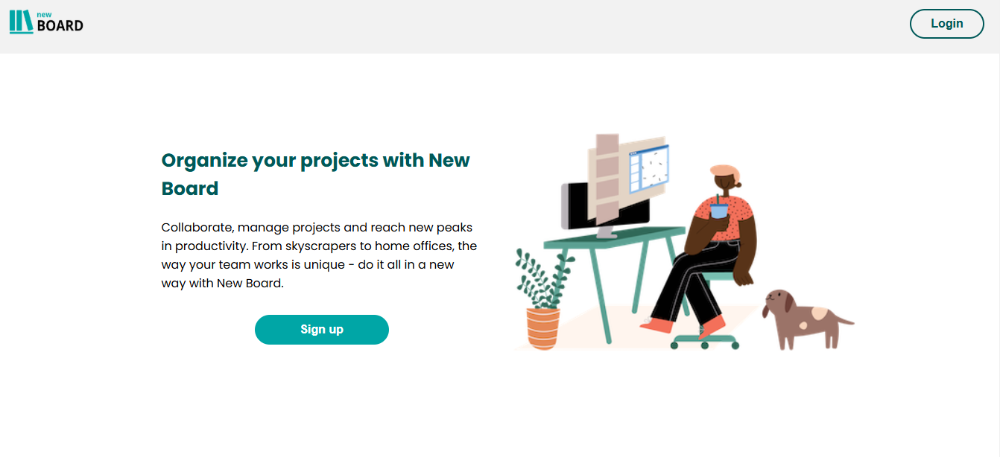
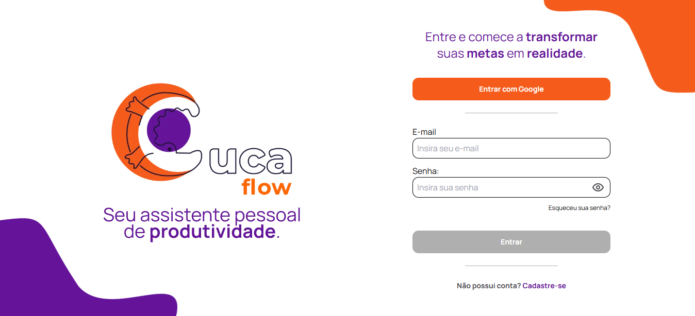
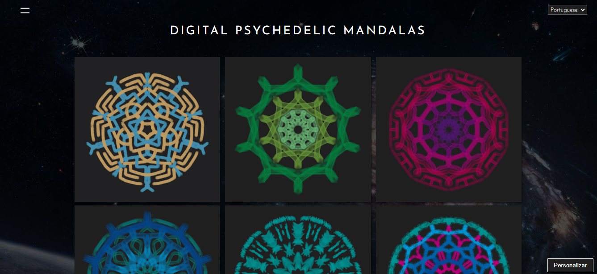
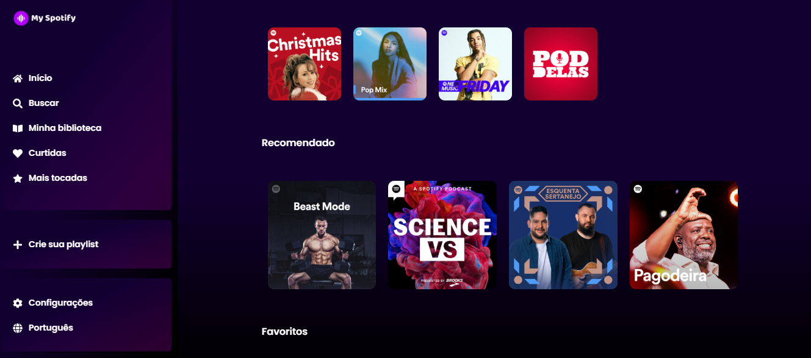

PROJETOS
Os melhores
-

New Board
New Board é um software que gerencia tarefas, similar ao Trello. Desenvolvido por uma equipe de cinco desenvolvedores liderados por mim, usando React, CSS, Node e PostgreSQL. Atuei como desenvolvedor frontend e designer, fazendo todo o design do projeto no Figma e criando as principais telas do projeto.
mais -

Cucaflow
Cucaflow é um software criado para melhorar a organização de artistas. Organizado pela Cubos Academy, que reuniu uma equipe de 6 desenvolvedores e 6 designers, simulando um ambiente profissional. As tecnologias utilizadas foram Node, Typescript, Next, Tailwind, Shadcn Ui, Nest, Prisma e PostgreSQL. Atuei como desenvolvedor frontend.
mais
Projetos frontend
-

Mandalas Digitais
Site feito como portfólio de um arquiteto para vendas de Madalas Digitais. Com apenas 3 meses de estudos como desenvolvedor frontend, fiz o site com tecnologias básicas como HTML, CSS e JavaScript. O site tem como objetivo divulgar e vender mandalas digitais.
mais -

My Spotify
Um site de música inspirado no Spotify. Este site é totalmente responsivo, desenvolvido em React e CSS com design elegante, moderno e intuitivo, completamente idealizado e criado por mim.
mais -

Hotel Campos
Hotel Campos é um site de reserva de Hotéis. É um projeto frontend onde tive meu primeiro contato com o Bootstrap. Usei diversos conhecimentos como Flexbox e Grid layout.
mais
Projetos fullstack
-
New Board
New Board é um software que gerencia tarefas, similar ao Trello. Desenvolvido por uma equipe de cinco desenvolvedores liderados por mim, usando React, CSS, Node e PostgreSQL. Atuei como desenvolvedor frontend e designer, fazendo todo o design do projeto no Figma e criando as principais telas do projeto.
mais -
Cucaflow
Cucaflow é um software criado para melhorar a organização de artistas. Organizado pela Cubos Academy, que reuniu uma equipe de 6 desenvolvedores e 6 designers, simulando um ambiente profissional. As tecnologias utilizadas foram Node, Typescript, Next, Tailwind, Shadcn Ui, Nest, Prisma e PostgreSQL. Atuei como desenvolvedor frontend.
mais
Projetos backend
-
Ponto de vendas
Este projeto foi desenvolvido durante o curso de desenvolvimento de Software com foco em Back-end na Cubos Academy, onde um grupo de três integrantes liderados por mim, desenvolveram uma API, onde o objetivo é simular o backend de um software que pode ser utilizado por uma loja de vendas. O projeto exigiu muito conhecimento em Node Js e Postgres.
mais -
Cubos Bank
Esta é o backend de um banco digital. Foi criada uma API RESTfull que permitiu: Criar conta bancária, listar contas bancárias, atualizar os dados do usuário da conta bancária, excluir uma conta bancária, depósitar em uma conta bancária, sacar de uma conta bancária, transferir valores entre contas bancárias, consultar saldo da conta bancária, emitir extrato bancário. Foram usados principalmente Node e Postgres para o desenvolvimento do projeto.
mais